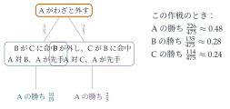

STEP II 1995、第12問
先に進む前に問題を読んでおこう。問題は STEP Support Programme の問題データベースにある： step.maths.org/questions/95-s2-q12
導入
3人がロールパンを投げ合って決闘をする。カスバートは決して外さず、バーティーは5回に3回命中させ、いちばん下手なアルジャーノンは5回に2回しか当てられない。最初に投げるのはアルジャーノンである。彼は誰を狙うべきだろうか。意外な答えは「誰も狙わない」である。彼はわざとロールパンを大きく外して投げるべきなのである。
理由は戦略（strategy）にある。3人全員が残っている間、危険な投げ手であるバーティーとカスバートは互いを狙い合う。もしアルジャーノンがどちらか一方を倒せば、生き残ったほうが彼に向かってくる。わざと外すことで、彼は2人に決着をつけさせ、そのうえで生き残ったほうに対して先に投げる権利を得る。実際、最善の作戦をとれば、いちばん下手な投げ手が最も勝つ可能性の高い者になる。この「三者決闘（truel）」は、弱さが有利に働きうることを示す、ゲーム理論（game theory）でよく知られた例である。
取りかかる前に
2人の決闘で、パーシーが先に投げる。彼がすぐに命中させるか、あるいは2人とも外して状況がまったく同じに戻るかのどちらかである。パーシーが勝つ確率（probability）についての方程式を立てよ。
パーシーが勝つ確率を \(P\) とする。彼はすぐに確率 \(p\) で命中させる。そうでない場合（確率 \(1 - p\)）はロドニーが投げ、確率 \(1 - r\) で外して最初の状態に戻る。したがって \(P = p + (1 - p)(1 - r)P\) である。
順を追って解く
段階 1 2人の決闘
これを解くと \(P\bigl(1 - (1 - p)(1 - r)\bigr) = p\) であり、\(1 - (1 - p)(1 - r) = p + r - pr\) であるから、 \[P = \frac{p}{p + r - pr}. \qed\] アルジャーノン（\(p = \frac25\)）とバーティー（\(r = \frac35\)）の決闘でアルジャーノンが先に投げる場合、これは \(\frac{2/5}{2/5 + 3/5 - 6/25} = \frac{10}{19}\) となる。バーティーが先に投げる場合、アルジャーノンが勝つ確率は \(\bigl(1 - \frac35\bigr)\cdot\frac{10}{19} = \frac{4}{19}\) である。
段階 2 アルジャーノンの3つの選択肢
それぞれの場合に、誰が残り、次に誰が投げるか。
アルジャーノンがカスバートに命中させる場合。次にバーティーがアルジャーノンに向かって投げる。アルジャーノンはバーティーが先に投げる決闘に勝たねばならず、その確率は \(\frac{4}{19}\) である。
アルジャーノンがバーティーに命中させる場合。次にカスバートがアルジャーノンに向かって投げ、決して外さない。アルジャーノンが勝つ見込みは \(0\) である。
アルジャーノンが外す場合。バーティーがカスバートに向かって投げる。確率 \(\frac35\) で命中し、アルジャーノンとバーティーが残ってアルジャーノンが投げる番になる。このときアルジャーノンが勝つ確率は \(\frac{10}{19}\) である。確率 \(\frac25\) でバーティーは外し、カスバートがバーティーに命中させ、アルジャーノンは1回だけ投げてカスバートと対決する。彼が勝つのは命中させたときだけで、その確率は \(\frac25\) である。合わせて、 \[\tfrac35\cdot\tfrac{10}{19} + \tfrac25\cdot\tfrac25 = \tfrac{6}{19} + \tfrac{4}{25} = \tfrac{150 + 76}{475} = \tfrac{226}{475} \approx 0.476.\]
段階 3 助言
アルジャーノンがカスバートを狙うと、命中する（確率 \(\frac25\)）こともあれば外れることもある。全体として彼が勝つ確率はいくらか。わざと外す場合と比較せよ。
カスバートを狙うと \(\frac25\cdot\frac{4}{19} + \frac35\cdot\frac{226}{475} = \frac{200 + 678}{2375} = \frac{878}{2375} \approx 0.370\) となる。バーティーを狙うのはさらに悪い。わざと外すと \(\frac{226}{475} \approx 0.476\) となり、これが最善である。したがってアルジャーノンは大きく外して投げるべきであり、そのとき彼が勝つ確率は \(\frac{226}{475}\) である。■

振り返り
繰り返される状況からは方程式が得られる。決闘は2回外れると「最初からやり直し」になるので、勝つ確率についての1次方程式（linear equation）が得られる。
相手がどう応じるかを考える。アルジャーノンの選択肢はどれも、バーティーとカスバートが次にとる行動を変える。
何もしないことも含めて、すべての選択肢を比較する。最善の手は、いちばん悪そうに見えた手であった。
背後にある数学
戦略とゲーム理論
三者決闘はゲーム理論の中心的な考え方を示している。すなわち、最善の行動は他のプレイヤーがどう応じるかに依存する。最も危険な相手であるカスバートに命中させるのは自然な手に見えるが、それはアルジャーノンに不利な形でゲームを変えてしまう。この問題ではバーティーとカスバートの戦略は固定されている（2人は互いを狙う）。完全なゲーム理論的分析では、各プレイヤーは他のプレイヤーも同じように考えていることを承知のうえで、自分の戦略を選ぶことになる。このような分析は、1944年のフォン・ノイマン（John von Neumann）とモルゲンシュテルン（Oskar Morgenstern）の研究、そして1950年のナッシュ（John Nash）の研究に始まり、今では経済学、進化生物学、政治学の基礎となっている。
弱点としての強さ
三者決闘に勝つのは誰か。アルジャーノンが最善の作戦をとるとき、勝つ確率はアルジャーノンが \(\frac{226}{475}\)、バーティーが \(\frac{135}{475}\)、カスバートが \(\frac{114}{475}\) である。最も腕のよい投げ手は、選択権をもつ者全員から狙われるため、生き残る可能性が最も低い。同じパターンは、複数の候補者がいる選挙、企業間の競争、そして最強の競争者が最初の標的になりうる自然界にも現れる。1950年代に三者決闘をゲーム理論に導入した Martin Shubik は、これを用いて「最も適した者が必ず生き残るのか」という問いを立てた。
思考のスキル
行動を選ぶ前に、それが他の全員にとって状況をどう変えるか、そして彼らがそれにどう応じるかを考えよ。
大学では、これはゲーム理論における後ろ向き帰納法（backward induction）になる。まずゲームの終盤を分析し、そこから遡って最善の初手を決めるのである。
次の一歩
バーティーとカスバート。アルジャーノンがわざと外すとき、バーティーが勝つ確率は \(\frac{135}{475}\)、カスバートが勝つ確率は \(\frac{114}{475}\) であることを確かめよ。
より腕のよい投げ手。アルジャーノンが命中させる確率が \(\frac25\) ではなく \(a\) であるとき、わざと外すことが依然として最善の初手となるのは \(a\) がどのような値のときか。
バーティーはカスバートを狙うべきか。アルジャーノンがわざと外すとき、バーティーにとってアルジャーノンではなくカスバートを狙うほうが得策か。（カスバートの行動は変わらないものとする。）
投げる回数が決まっている決闘。各プレイヤーが2回しか投げられない決闘において、パーシーが勝つ確率を求め、回数に制限のない決闘と比較せよ。
さらに学ぶために
D. Marc Kilgour & Steven Brams, “The truel”, Mathematics Magazine 70 (1997). 三者決闘についての読みやすい概説。
Avinash Dixit & Barry Nalebuff, Thinking Strategically (Norton). 一般読者向けのゲーム理論の本で、三者決闘も扱っている。
Ken Binmore, Game Theory: A Very Short Introduction (Oxford University Press). ゲーム理論の簡潔な入門書。